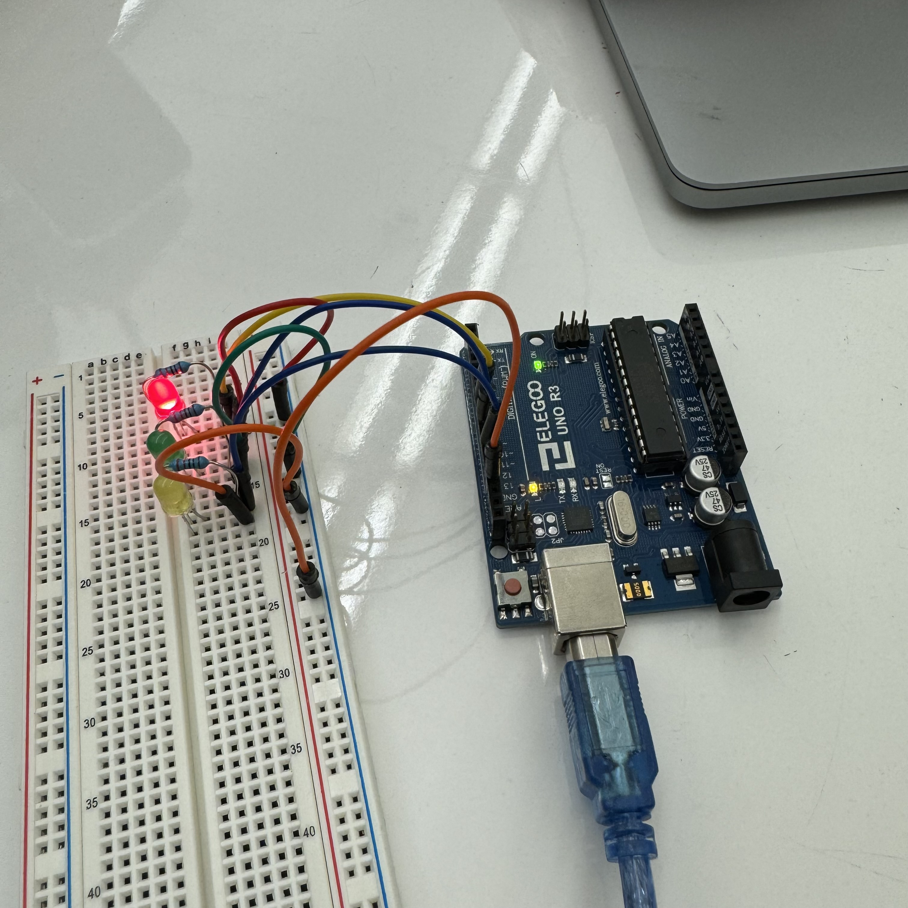

This was the first assignment in HCDE439, titled Blink!
To begin, featured here is a GIF of what this assignment entails,
which is to configure at least 3 LEDs on a circuit and connect
it to Arduino to make each individual LED blink. In this GIF, we see that each color (red, green, and yellow) blinks individually.
Here is the schematic and calculations showing the appropriate resistance for the circuit. To prevent the 3 LED's voltages from exceeding the supply voltage of 5V, I connected the LEDs in parallel. This meant the total voltage drop from all three colors was 1.8V (red, green, and yellow all have the same voltage drop). We also know that these three colors have the same desired current of 20mA or 0.02A. To calculate the resistance of each LED, we can divide the current from the voltage, to get 160Ω.

On the left is an image of my circuit. Though 160Ω was
calculated as the needed resistance for each LED, the next available
resistor in my kit was 220Ω, which I ended up using for all 3 colors. Again, this is because every color I used has the same voltage drop and desired current. On the power rails of the breadboard, we also see that all LEDs were connected in order to be grounded on the Arduino.
/* function runs once when you power the board */
void setup() {
/* three lines of code initializing each pin as an output */
pinMode(7, OUTPUT);
pinMode(9, OUTPUT);
pinMode(11, OUTPUT);
}
void loop() { /* function runs over and over */
/* turns LED on pin 7 on, HIGH represents the voltage level */
digitalWrite(7, HIGH);
/* delays next code by 1 second, so LED is lit for 1 second */
delay(1000);
/* turns LED on pin 7 off, LOW reprsents the voltage level */
digitalWrite(7, LOW);
/* delays next code by 1 second, so LED is off for 1 second */
delay(1000);
/* turns LED on pin 9 on, HIGH represents the voltage level */
digitalWrite(9, HIGH);
/* delays next code by 1 second, so LED is lit for 1 second */
delay(1000);
/* turns LED on pin 9 off, LOW reprsents the voltage level */
digitalWrite(9, LOW);
/* delays next code by 1 second, so LED is off for 1 second */
delay(1000);
/* turns LED on pin 11 on, HIGH represents the voltage level */
digitalWrite(11, HIGH);
/* delays next code by 1 second, so LED is lit for 1 second */
delay(1000);
/* turns LED on pin 11 off, LOW reprsents the voltage level */
digitalWrite(11, LOW);
/* delays next code by 1 second, so LED is off for 1 second */
delay(1000);
}
Additional Questions
1.
2. Because there are 14 input/output pins available on the Arduino board, we can blink 14 LEDs independently. To calculate the total current this would draw, we can multiply the number of LEDs we have by the forward current (0.02A is used across the LEDs we used) to get a current of 0.28A.
3. I found that while looking very closely to the LED while blinking,
I needed to blink the LED every 9 milliseconds until I could no
longer tell it was blinking. While looking at the LED at an average distance, I would give a range from 10-12 milliseconds.